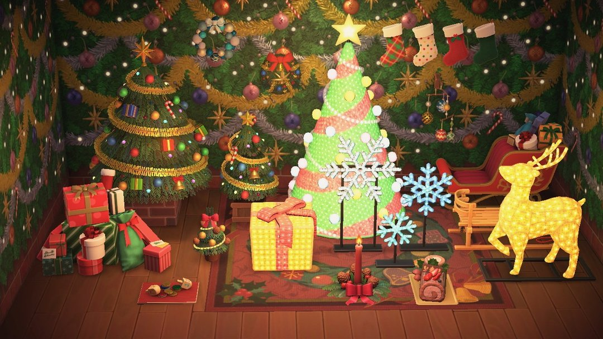

Ornament season: December 15 to January 6, shake your cedar trees
How to collect red, blue, and gold ornaments, all 18 festive DIY recipes, and the few to save for Toy Day
Near the end of the year, the cedar trees on your island get strung with lights and baubles. In both hemispheres, from December 15 to January 6 of the following year, shaking a cedar tree drops ornaments in three colors: red, blue, and gold.
Ornaments go into 18 festive DIY recipes: the big festive tree, illuminated tree, giant ornament, and more. Crafting all of them takes 56 red, 50 blue, and 48 gold. On Toy Day, December 24, you'll also need 3 of each color to make wrapping paper, so remember to set those aside first.

From December 15, cedar trees are decorated (Image: Nookipedia)
01When
Ornament season follows the year-end holidays, so it's the same window in both hemispheres. All dates are in-game dates.
| Hemisphere | Starts | Ends |
| Northern | December 15 | January 6 (next year) |
| Southern | December 15 | January 6 (next year) |
In the Northern Hemisphere this overlaps with snowflake season (December 11 to February 24), and in the Southern Hemisphere it falls within summer shell season (December 1 to the end of February), so you can collect both at once.
02How to shake for them
Walk up to a cedar tree and give it a shake, and ornaments will fall out in a random color. Gold is the rarest; red and blue are more common.
Ornaments sell for only 50 Bells each and stack up to 30 per pocket slot. They're not worth selling, so keep them all for furniture.
NoteShaking cedar trees can also knock down a wasp nest, and the wasps will chase you and sting. Have your net in hand before you shake so you can catch them in time.
TipOrnaments can go in storage. Stock up near the end of the season so you can keep crafting after it's over. And if you haven't learned every recipe for the season yet, no worries — you can pull them back out once you do.
03Where the DIY recipes come from
Shooting down balloons: during ornament season, balloons floating overhead drop festive DIY recipes.
Visiting villagers at home: during this time, villagers crafting at home are usually making festive furniture, so if you catch them at it, you can learn the recipe. If you already know that one, they won't teach it to you and will give you 3 ornaments in random colors instead.
Isabelle on December 15: on the first day of ornament season, Isabelle will give you the ornament wreath.
Jingle on December 24: on Toy Day itself, Jingle will teach you festive wrapping paper. It isn't one of the 18 below; see our Toy Day guide for how the day works.
04All 18 DIY recipes
| DIY recipe | Materials |
| ornament wreath From Isabelle on December 15 | 6 blue ornaments, 2 gold ornaments |
| big festive tree | 6 red ornaments, 6 blue ornaments, 4 gold ornaments, 5 wood, 5 clay |
| festive tree | 3 red ornaments, 3 blue ornaments, 2 gold ornaments, 5 wood |
| tabletop festive tree | 5 gold ornaments, 3 tree branches, 2 clay |
| ornament tree Added in 2.0 | 3 red ornaments, 2 blue ornaments, 1 gold ornament, 3 iron nuggets |
| illuminated tree | 8 red ornaments, 8 blue ornaments, 6 gold ornaments, 6 iron nuggets |
| illuminated present | 3 red ornaments, 4 gold ornaments, 3 iron nuggets |
| illuminated reindeer | 6 gold ornaments, 5 iron nuggets |
| illuminated snowflakes | 9 blue ornaments, 3 iron nuggets |
| giant ornament Added in 2.0 | 10 red ornaments |
| ornament garland Added in 2.0 | 2 red ornaments, 2 blue ornaments, 2 gold ornaments, 5 iron nuggets |
| ornament mobile | 1 red ornament, 1 blue ornament, 1 gold ornament, 4 tree branches |
| ornament table lamp Added in 2.0 | 2 red ornaments, 2 iron nuggets |
| holiday candle | 5 red ornaments, 5 weeds |
| festive top set | 2 gold ornaments, 1 hardwood |
| Jingle wall | 5 red ornaments, 5 blue ornaments, 5 gold ornaments, 5 clay |
| festive rug Added in 1.6 | 5 red ornaments, 5 blue ornaments, 5 gold ornaments |
| ornament crown Added in 2.0 | 3 red ornaments, 3 blue ornaments, 3 gold ornaments |
Crafting all 18 takes 56 red ornaments, 50 blue, and 48 gold, plus 27 iron nuggets, 12 clay, 10 wood, 7 tree branches, 5 weeds, and 1 hardwood.
05Save 9 for Toy Day
On December 24, Jingle will ask you to make 3 sheets of festive wrapping paper, each needing 1 red, 1 blue, and 1 gold, so that's 3 of each color in total. Before the 24th, put those 9 in storage and don't use them for furniture.
Gold is the one you're most likely to run short on: the big festive tree needs 4, the illuminated tree 6, and the illuminated reindeer 6. Save the first 3 gold ornaments you shake down for the wrapping paper, then use any extras for furniture.
06What to make first
Big festive tree: a large 2×2 tree that brings the most holiday spirit to your plaza. It takes 6 red, 6 blue, and 4 gold, plus 5 each of wood and clay.
Giant ornament: just 10 red ornaments, perfect for using up extra reds when you've shaken down a lot.
Ornament table lamp: 2 red ornaments and 2 iron nuggets, the cheapest recipe of the bunch. Set it indoors as a little lamp.
Ornament crown: a crown you can wear on your head, 3 of each color.
Festive rug: a big 4×4 rug, 5 of each color.
Most of this season's festive furniture can also be customized in different colors once you've made it.

A room decorated with festive furniture (Image: Nookipedia)
07Version history
The festive rug DIY recipe was added in 1.6; the giant ornament, ornament crown, ornament garland, ornament table lamp, and ornament tree were added in 2.0. Also starting in 2.0, if a villager is crafting a festive DIY recipe you already know, they'll give you 3 ornaments in random colors instead. The 3.0 update notes didn't mention any changes to ornament season.
Nook Circle · Search "Nook Circle" on the App Store